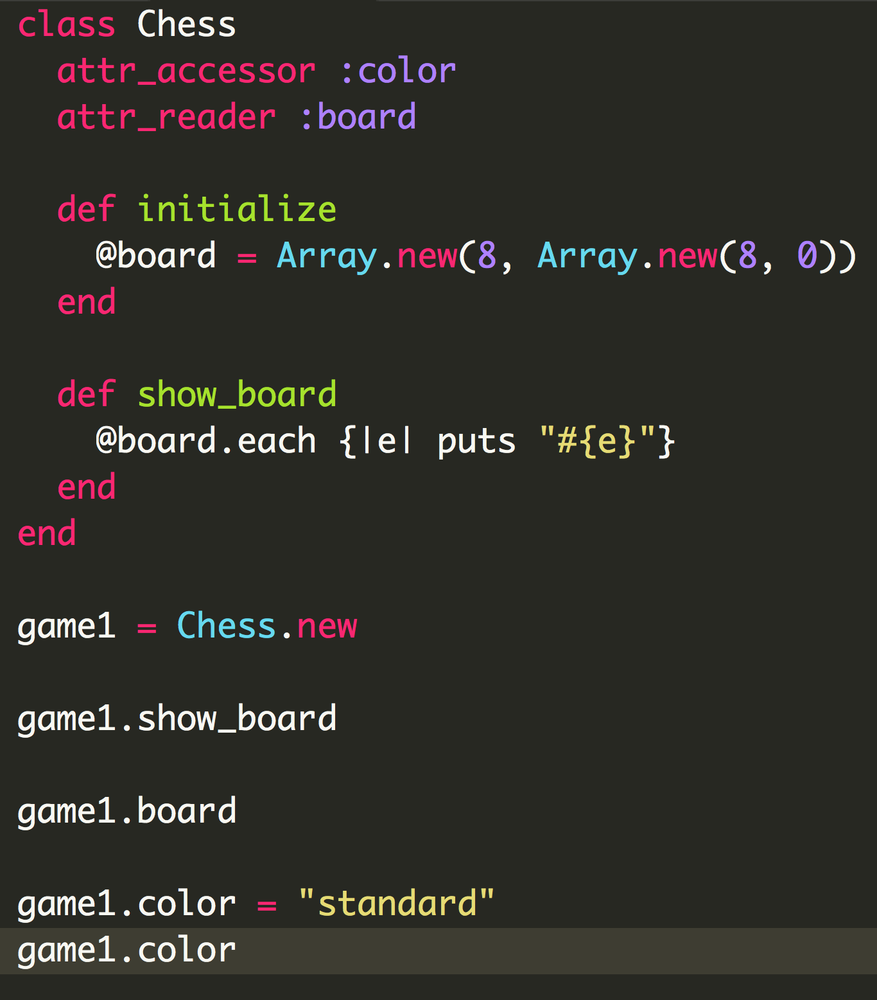

Ruby Classes
March 8th, 2015
Classes are indispensible in Ruby for structuring programs and endowing objects with inalienable rights (though objects are not entirely bound to adhere to their Class particularities).
Here is a simple example of a Class.

If you are hoping to change the original array, you can turn to the bang version of #map, #map!
Here is an Enumerable Iterators cheat sheet, courtesy of Erik Trautman, with #map bringing up the rear: